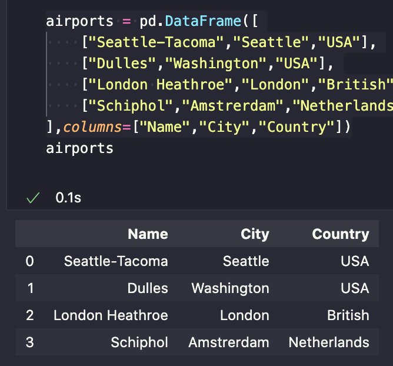
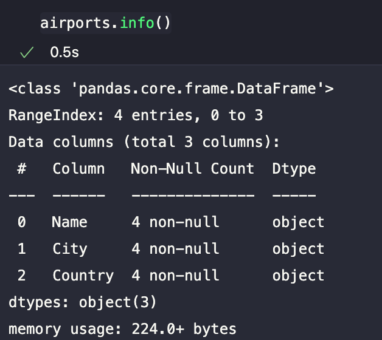
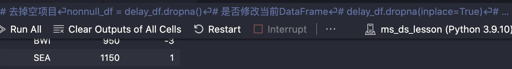

Preface
最近在网站上看到了微软在 github 开源的机器学习，数据科学，物联网的相关教程，比较感兴趣，学到就是赚到，
于是跟着教程学了一下，总比闲的发慌自我压迫的好。
之前是直接在网页上用 Jupyter Notebook ，现在上改用 conda 然后是 VS Code 上使用 Jupyter 插件。
Contents
1
2
3
4
5
6
7
8
9
10
11
12
13
14
15
| import pandas as pd
import numpy as np
import matplotlib.pyplot as plt
airports = pd.Series([
"Seattle-Tacoma",
"Dulles",
"London Heathrow",
"Schiphol"
])
airports.shape
|
1
2
3
4
5
6
7
|
airports = pd.DataFrame([
["Seattle-Tacoma","Seattle","USA"],
["Dulles","Washington","USA"],
["London Heathroe","London","British"],
["Schiphol","Amstrerdam","Netherlands"],
],columns=["Name","City","Country"])
|


loc和iloc用于访问指定的列:loc是基于标签查找，iloc是基于索引查找
1
2
3
4
5
6
7
8
9
|
airports.loc[:,["Name","Country"]]
|
1
2
3
4
5
6
7
8
9
10
11
12
13
14
15
16
17
18
19
|
airports_df = pd.read_csv("data/airport.csv",on_bad_lines="warn",header=0)
airports_df.to_csv()
delay_df = pd.read_csv("data/arrive_time.csv")
delay_df.drop(columns=["Actual_arr_time"],inplace=True)
nonnull_df = delay_df.dropna()
delay_df.duplicated()
delay_df.drop_duplicates(inplace=True)
|
Problems
VS Code插件无法更新的问题
Jupyter插件对于VS Code是有版本要求的，我的 VS Code刚好就更新不了，于是去网上搜索了一下，发现这个是Mac版本的问题，导致Download中的 App 无法更新，我重新下载了最新版本的 VS Code，然后通过 mv 指令将它移动到 Applications 下面，就ok了。
Jupyter中conda配置
通过 Command+Shift+P 召唤命令菜单，新建 Jupyter Notebook ，发现导入不了包，后来通过 conda 新建了一个环境，在命令行中active，install都没有用，最后发现右上角有个选择环境的入口:

scikit-learn的使用
1
2
3
4
5
6
7
8
9
10
11
12
13
14
15
16
17
18
19
20
21
22
23
24
25
26
27
28
29
30
31
32
33
|
delay_df = pd.read_csv("some_csv")
delay_df.dropna(implace=True)
X = delay_df.loc[:,["DISTANCE","CRS_ELAPSED_TIME"]]
y = delay_df.loc[:,["ARR_DELAY"]]
X_train,X_test,y_train,y_test = train_test_split(X,y,test_size=0.3,random_state=42)
regressor = LinearRegression()
regressor.fit(X_train,y_train)
y_predict = regressor.predict(X_test)
type(y_predict)
y_predict_df = pd.DataFrame(y_predict)
from sklearn import metrics
mse = metrics.mean_squared_error(y_test,y_predict)
import numpy
rmse = num.sqrt(mse)
mae = metrics.mean_absolute_error(y_test, y_predict)
r2 = metrics.r2_score(y_test, y_predict)
|
References
- Bilibili - 微软Python数据科学官方教程
- Github - Microsoft/Data Science For Beginners
- scikit-learn.cn